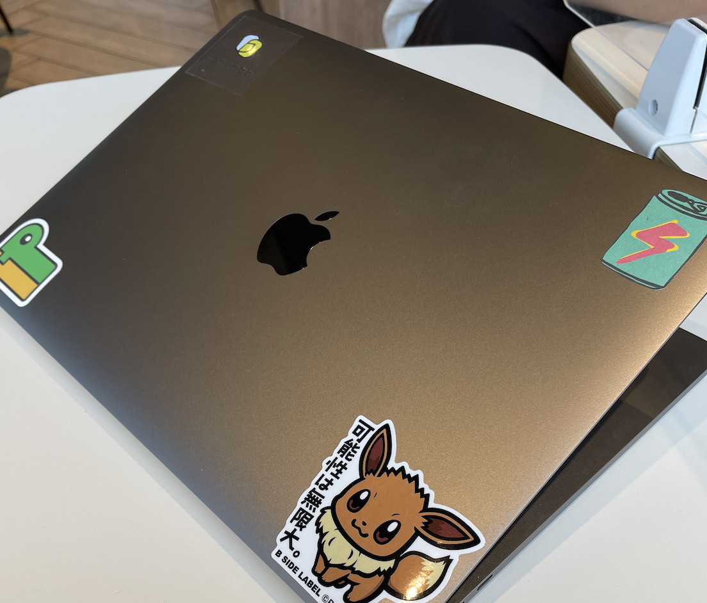
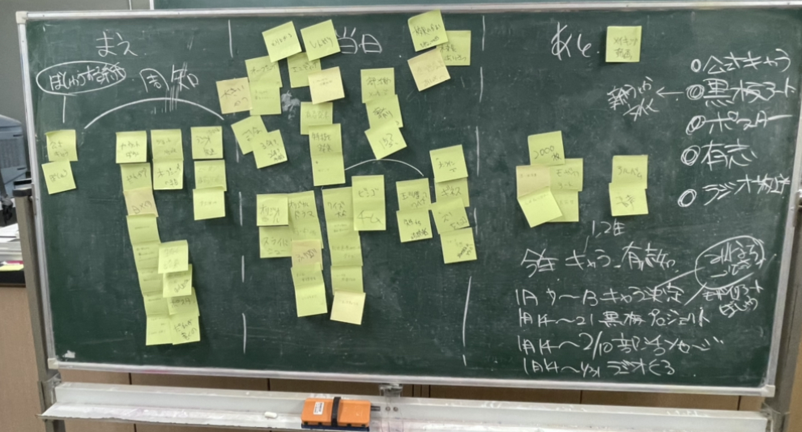

たこやき

僕は小学生の頃から毎週たこ焼きを食べてきました。焼くのも食べるのも、材料を買いに行くのも好きです。
特に電気ではなくガス火で焼くたこ焼きは絶品です。
macbookpro

基本的にmacがあれば僕は生きていけます。生活のこと、学習のこと、仕事や趣味まで。全てのことをこのmacと共に過ごしています。
自分の会社のステッカーや作ったサービスのロゴ、イーブイが貼ってあるのが特徴です。もう直ぐM1に乗り換えたいです。
最近すみ始めた家

最近、滋賀から京都にすみ始めました。シェアハウスをしていて、5人ほどで住んでいます。家はすごく古い京都らしいお家です。
家の中にかまどもあるのでいつかこれでご飯を作りたいと思っています。
ブレスト

このように、アイデアを複数人でブレストして考えることがすごく好きです。
これは学校での行事について生徒会でブレストした時の黒板です。
学食

最近、100円朝食にはまっています。
これはここ最近で一番美味しかったそばです。
温玉のせ、最高でした。